Artifacts
Artifacts are rich, interactive outputs that Zoë creates for you. They can be a wide variety of types — interactive apps, written documents, data spreadsheets, slide presentations, and more. Use the Artifacts page to organize, revisit, and share everything Zoë has built across your conversations.
Viewing your artifacts
Click Artifacts in the left-hand navigation sidebar to see all of your saved artifacts. Use the tabs at the top to switch between:
- My Artifacts — Artifacts you've created.
- Shared With Me — Artifacts others in your organization have shared with you.
Each artifact displays a thumbnail preview, its name, and when it was last edited. Filter by type using the chips below the tabs — All Artifacts, Apps, Documents, Spreadsheets, Presentations, or Other — to quickly narrow down what you're looking for. Use the search bar in the upper right to find a specific artifact by name.
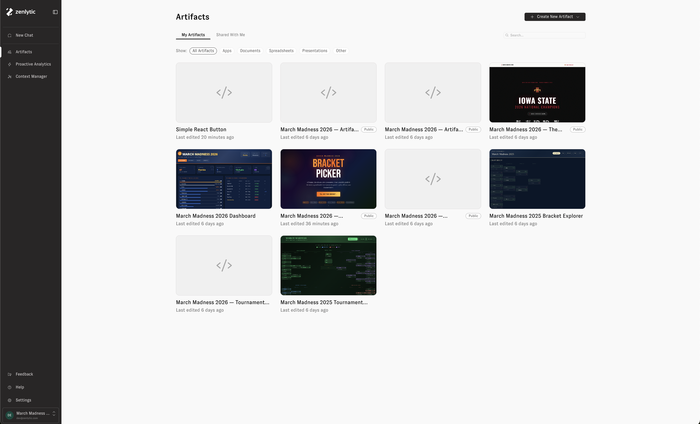
Artifacts in chat
Zoë creates artifacts automatically whenever a visual output would be helpful — or when you ask her to build something. Artifacts appear inline in the chat, and you can click on one to expand it in the side drawer.
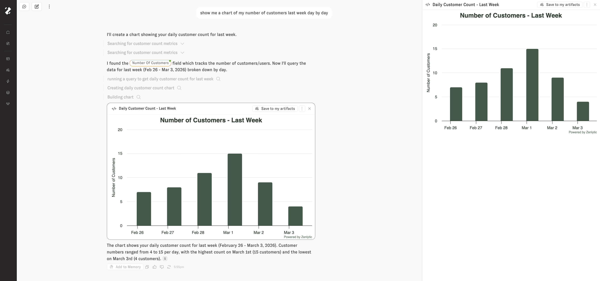
If an artifact is something you'd like to keep and come back to, click Save to my artifacts. The artifact will then appear in your Artifacts gallery alongside everything else you've saved.
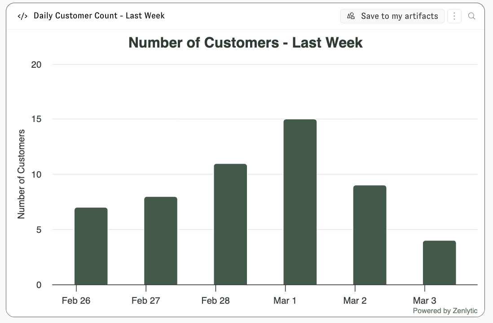
Creating a new artifact
You can also create artifacts directly from the Artifacts page. Click the + Create New Artifact button in the upper right corner. A dropdown lets you choose the type of artifact to create:
- App — An interactive application.
- Document — A rich text document.
- Spreadsheet — A data spreadsheet.
- Presentation — A slide presentation.
- Other — Any other artifact type.
Selecting a type opens a new chat with Zoë where you can describe what you'd like to create.
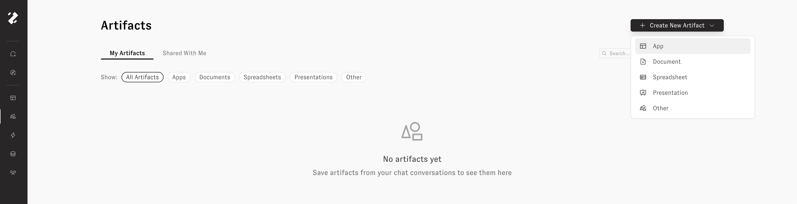
Opening and editing an artifact
Click any artifact on the Artifacts page to open it in a side drawer. From the drawer you can preview the artifact, share it with others in your organization, or schedule it for automatic refresh.
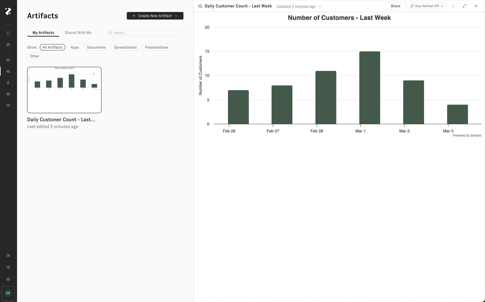
To edit an artifact, click Edit in a new chat from the three-dot menu in the drawer header. This opens a new chat with the artifact attached, so you can tell Zoë what you'd like to change. Zoë will update the artifact and a new version will appear in the update history.
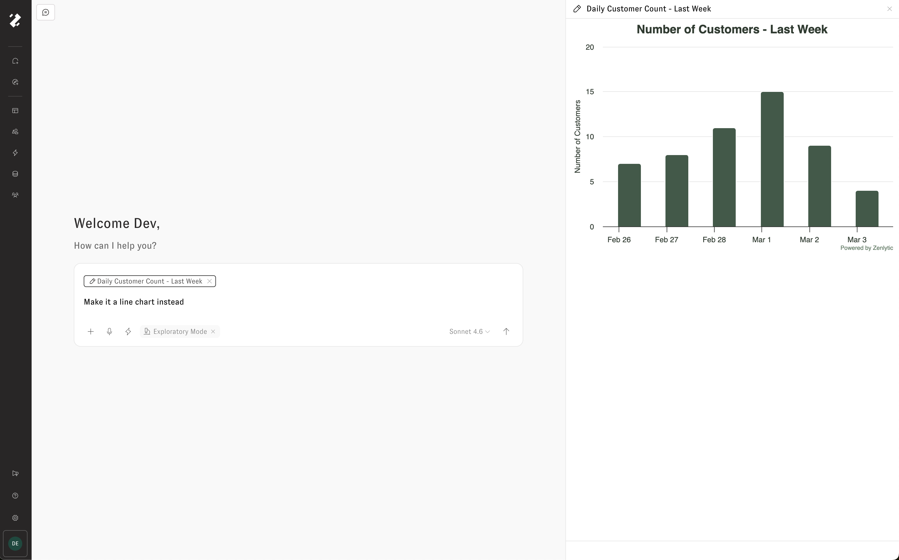
Update history
Click the Updated timestamp on an artifact to open its update history. The history panel displays every version of the artifact, letting you time travel through past states.
From the three-dot menu on any version, you can:
- View Artifact Memory — See the context Zoë used when creating that version.
- Download — Download the artifact as it existed at that point in time.
- Edit from this version — Start a new edit based on an older version of the artifact.
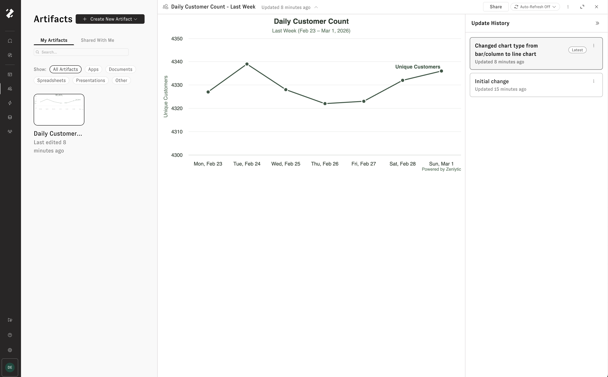
Sharing an artifact
Click the Share button in the artifact drawer to share an artifact with others in your organization. From the Share tab, select a user group and assign a permission level — for example, Viewer (cannot edit or share). Click + Add Group to grant access to additional groups.
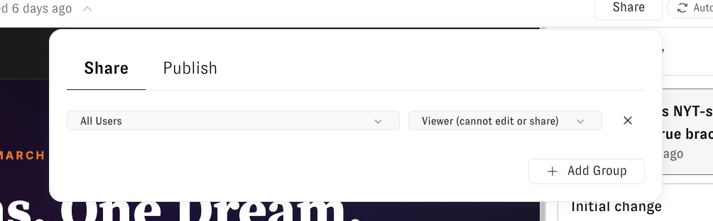
Publishing to the web
To make an artifact publicly accessible, click the Share button and open the Publish tab. Click Publish to generate a unique public URL and an embed script that anyone can use to access the artifact — no Zenlytic account required.
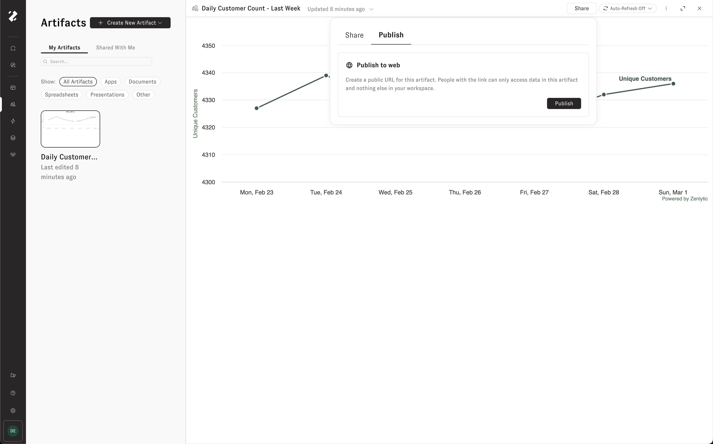
Once published, the artifact displays a Public chip on the Artifacts page. A public link and an iframe embed script are provided so you can share the artifact or embed it on another site.
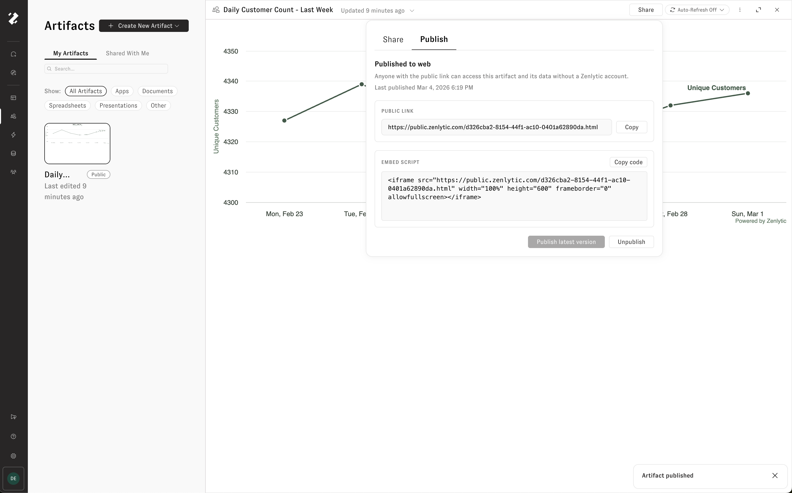
Editing or refreshing an artifact does not automatically update the published version. When you're ready for the latest version to go live, click Publish latest version. To remove public access entirely, click Unpublish.
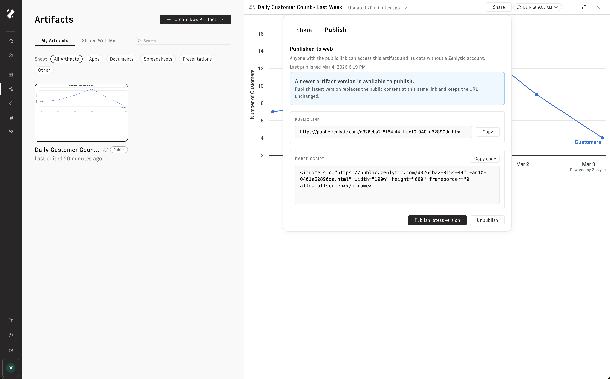
Auto refresh
Keep an artifact's data up to date by enabling auto refresh. When turned on, Zoë automatically re-pulls the data and rebuilds the artifact on a schedule — so your dashboard, presentation, or writeup is always ready with live data.
Click the Auto-Refresh Off button in the artifact drawer header to open the auto refresh settings. Toggle Enable auto refresh, then configure:
- Frequency — How often to refresh (e.g., Daily).
- Time — What time of day to run the refresh, shown in your local timezone.
- Instructions — Optional directions for Zoë to follow during each refresh. For example: "Highlight any outliers in the data and write short blurbs about their trends."
Click Save to apply the schedule.
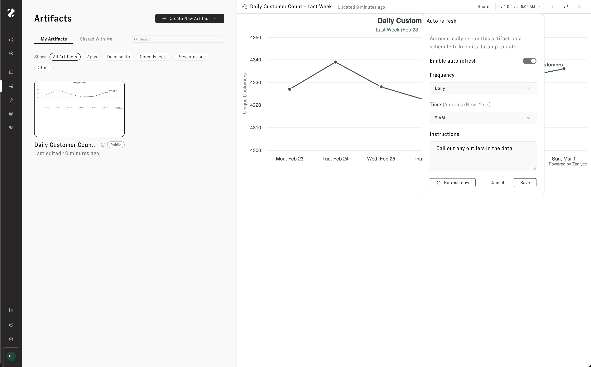
To run a refresh immediately without waiting for the next scheduled time, click Refresh now.
Every refresh and edit appears in the artifact's update history, so you can see how the artifact has changed over time.
Artifact memory
Every artifact has an artifact memory — a detailed summary of the artifact's purpose, your instructions, version history, and key context. Zoë references this memory whenever you work with the artifact in a chat, so she understands what the artifact is, what you like and dislike about it, and how it has evolved over time.
To view an artifact's memory, click the three-dot menu in the artifact drawer header and select View Artifact Memory.
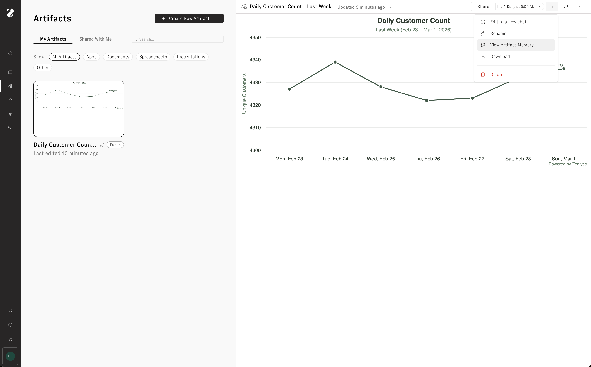